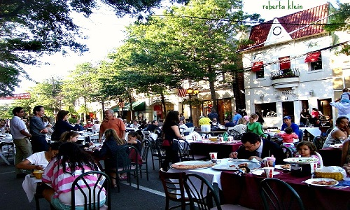

The Bride and Groom
けい
 恵はニューヨーク州ベイサイド市に生まれ、兄の洋と妹の歩と萌と共に育ちました。長女の恵は穏やかで小さい頃から長子と間違われるほどしっかりしていました。いつも妹たちの面倒をみたりニューヨークセンターの行事に参加したりしていました。恵には日本に住んでみたいという思いがありました。その思いを実現させるため、京都での留学プログラムで名を知られているボストン大学へ進学しました。実家以外ので生活は初めてでしたが、ボストンと京都で沢山の新しい友達に出会い、無事に日本語・日本文化学科を修了しました。大学で日本語と日本文化への理解を身に付けただけでなく、後に夫となるハンサムな彼氏も付いて来ました。恵はマットに電化製品の購入の権限を全て委ねると誓いに付け足します。
恵はニューヨーク州ベイサイド市に生まれ、兄の洋と妹の歩と萌と共に育ちました。長女の恵は穏やかで小さい頃から長子と間違われるほどしっかりしていました。いつも妹たちの面倒をみたりニューヨークセンターの行事に参加したりしていました。恵には日本に住んでみたいという思いがありました。その思いを実現させるため、京都での留学プログラムで名を知られているボストン大学へ進学しました。実家以外ので生活は初めてでしたが、ボストンと京都で沢山の新しい友達に出会い、無事に日本語・日本文化学科を修了しました。大学で日本語と日本文化への理解を身に付けただけでなく、後に夫となるハンサムな彼氏も付いて来ました。恵はマットに電化製品の購入の権限を全て委ねると誓いに付け足します。
マット
ビーチサンダルと揚げ物をこよなく愛するマットはアメリカ南部にあるフロリダ州ジャクソンビル市に生まれ、温かい気候の中で家族や親族と共に育ちました。マットは冬でも太陽が照っているフロリダを離れ、どんよりとした冬の日が多いアメリカ北部の大学へ進学することを決めました。ブランダイス大学では経済学と東アジア文化学の二つの専攻を選択しました。その後は大学で新しく培った野球、雪、そして素敵な彼女への愛に導かれ、眠らない街ニューヨークで就職しました。現在マットは広告技術会社でソリューションエンジニアとして働いています。どういう仕事をしているのかというと：YouTubeで動画を見たい時、迷惑な広告がまず流れますよね？なぜあなたに関係のある広告が流れるのでしょう？マットのしわざです！マットは恵のIT問題を24時間体制で保証すると誓いに付け足します。
出会い
2008年の夏が暮れる頃、二人の留学生が胸に希望を抱えながら一年間の京都生活を始めました。当時から好奇心旺盛だったマットは色々な経験をしながら友達を沢山作って帰ると決心しました。昔から日本に馴染みのある恵は大学最後の年をのんびりしながら楽しむつもりでした。共通の授業はなかったものの、マットと恵は偶然に会うことが多々ありました。初めは空き時間におしゃべりをするぐらいの仲だった二人でしたが、好評だった恵の夕食会にマットは参加するようになり、いつしか二人は一時も離せないほど仲良くなり、頭を抱える就職活動さえ共にしていました。相性の良い二人はたちまち惹かれ合い、その思いは愛へと。それからというもの、世界各地への旅を共にしたりお互いの歯ブラシを使う時もある二人は、これからの人生も共にする覚悟も決めました。
プロポーズ
とある肌寒い11月の土曜日に、マットは恵の誕生日を祝うために女性向けのデートコースを企画しました。まずはブルックリン区の植物園へ行き、バラが並ぶ温室を散歩しました。そこからは古い歴史を持つブルックリン橋を渡りマンハッタン区へ。夕焼けが見える頃、マットは恵をエンパイア・ステート・ビルディングへ案内しました。中へ入ると、マットはあらかじめ購入していたエクスプレスチケットを取り出し、二人は長蛇の列を通り越し展望台へ直行。そこでマットは恵の目をじっと見つめながら…
…マットは何もせずにデートは終わってしまいました。何もないまま一週間が過ぎました。マットと（少しがっかりしていた）恵はクイーンズ区にある恵の実家である教会の月次祭へ参拝に行きました。祭典後は恵の父親が心に響く「出会いに偶然は無い」という内容の講話をしました。その通りです。大学生の頃に恵とマットが出会ったのは偶然なんかではなかったのです。講話の直後、恵の家族や月次祭に来ていた教会に繋がる人々の前でマットは恵に思いを告白しました。
気になる方の為にプロプーズの一部始終は こちら
Wedding
結婚式
Tenrikyo Mission New York Center
42-19 147th Street
Flushing, New York
2014年9月27日（土）
午後２時から天理教ニューヨークセンターの神殿にて
＊その後にInn at Great Neckにて結婚披露宴を行います
行事進行予定
リハーサル・ディナー
9月26日（金）午後６時半から
フィリピン料理と日本料理の響宴
結婚式
9月27日（土）午後２時より
結婚披露宴
9月27日（土）午後６時よりInn at Great Neckにて
お世話係
花嫁の付き添い
ヒョン・リー
サマンサ・サバン
アユミ・カミオ
メグミ・カミオ
花婿の付き添い
ヴィンセント・バリワン
ジェイソン・チャン
ウェスリー・ホー
セイビー・バリワン
Accomodations
ホテル
（披露宴会場）
The Inn at Great Neck
30 Cutter Miller Road
Great Neck, NY 11021
(516) 773-2000
$199
※上記の特別価格が保証されるのは2014年6月15日までに予約を済まされた方のみとなっております。また、予約をされる際には「サバン家・神尾家の結婚式」（英語：Kamio-Sabban Wedding）と一言申していただければ特別価格で予約が取れます。
披露宴会場のINN AT GREAT NECKについて
Inn at Great Neckは個人経営されている高品質ホテルです。ロング・アイランド島の綺麗で歴史的なノース・ショア海岸、別名ゴールド・コーストと呼ばれているグレート・ネック区の並木沿いに位置しております。当ホテルでは1920年代のジャズ・エイジを記念するアール・デコのユニークな装飾が敷地内の至る所に飾られています。F・スコット・フィッツジェラルドの代表作『グレート・ギャツビー』の舞台となるウェスト・エッグという町はグレート・ネック市がモデルとされています。当ホテルを出て二つ目の交差点を過ぎればグレート・ネック駅があり、電車に乗れば２５分ほどで直接マンハッタン区へたどり着けます。もう少し詳しく知りたい方はこちらへ（英語）
グレート・ネック市について
グレート・ネック半島に位置するグレート・ネック市は面積わずか3.6平方キロメートルの小さな街ですが、ニューヨーク市からロング・アイランド島の郊外に向かう時に先ず通る街の一つで、アメリカの「狂乱の20年代」と呼ばれる1920年代から不動産業や経済的発展のホットスポットとして人気を集めだしました。「狂乱の20年代」を代表する数多くのグレート・ネック市民にはF・スコット・フィッツジェラルドやマルクス兄弟などが挙げられます。住宅街として知られている街ではありますが、本通りには喫茶店やブティックがずらっと並んでおり、ロング・アイランド鉄道の駅が本通りから歩いて行ける距離にあります。大都市の目先にある美しくて賑やかな郊外の代名詞とも呼べる街です。


- 
お問い合わせ
マットと恵に一言！
メールはmattkaysabban@gmail.comまで
また、気軽に1-347-899-0745までお電話ください